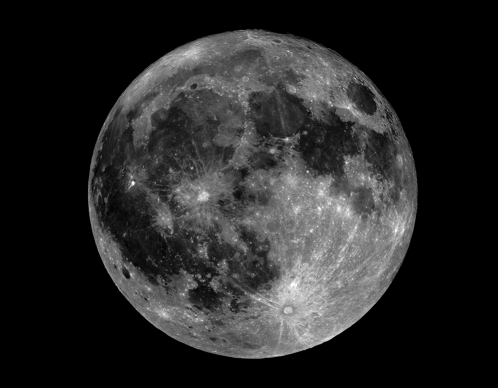

The Moon is Earth’s only natural satellite and the fifth-largest in the Solar System. Orbiting our planet at an average distance of about 384,400 kilometers (238,855 miles), the Moon has a profound influence on Earth’s tides and rotational stability. Its surface is covered with craters, mountains, and vast plains formed by ancient volcanic activity and meteorite impacts. With no atmosphere to protect it, temperatures on the Moon can vary dramatically between day and night. The Moon has inspired human exploration and scientific curiosity for centuries, culminating in the historic Apollo missions that first brought astronauts to its surface in 1969.
